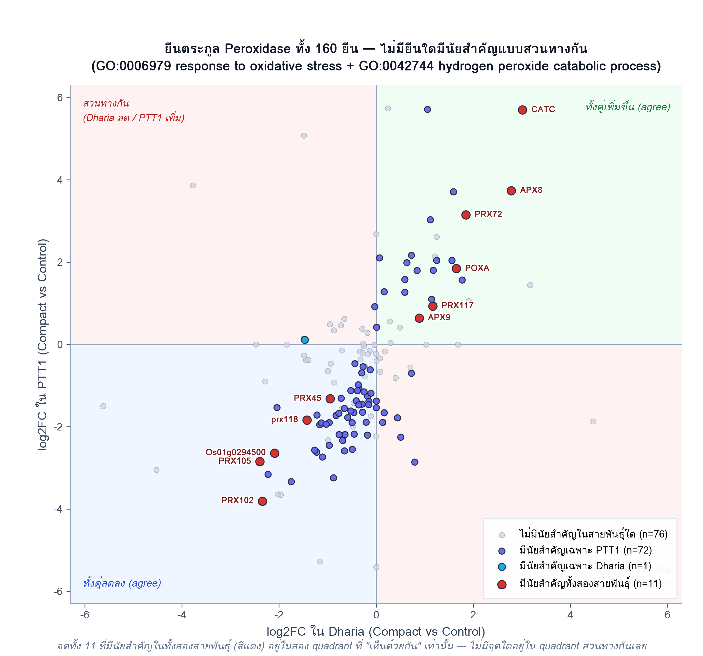
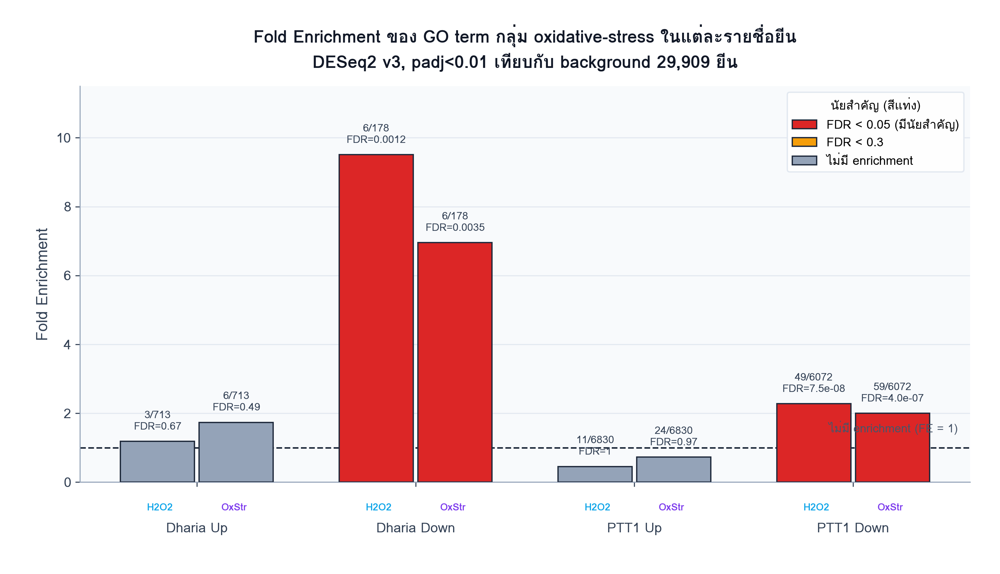
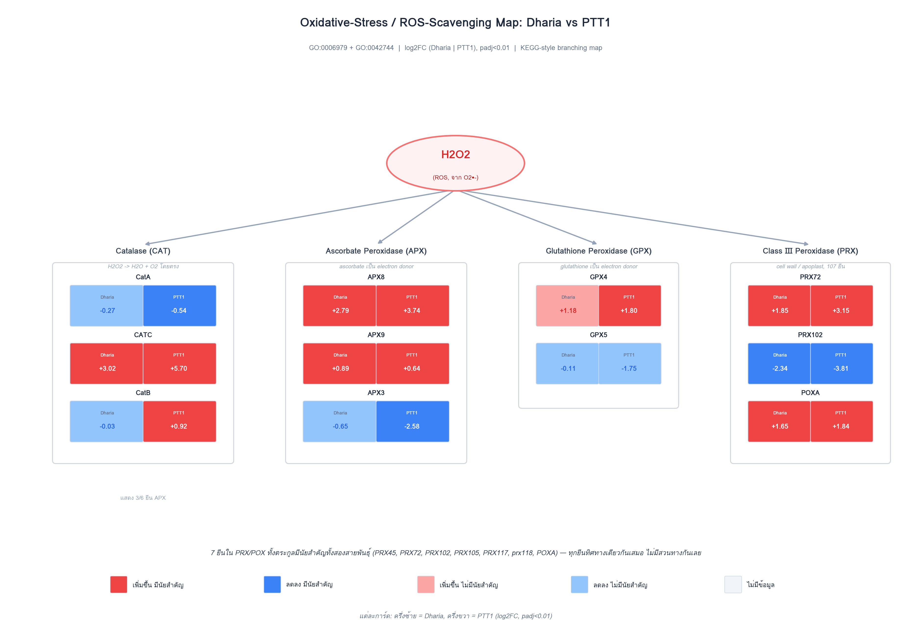

Oxidative-Stress / Peroxidase Gene Family — รายละเอียดระดับยีน
ขยายความจากหัวข้อ oxidative-stress ในหน้า GO Enrichment — ยีนตระกูล peroxidase ทั้ง 160 ยีนที่ annotate ไว้กับ response to oxidative stress (GO:0006979) และ/หรือ hydrogen peroxide catabolic process (GO:0042744) เจาะลึกด้วย 3 มุมมอง: ระดับยีนเดี่ยว (scatter), Fold Enrichment ที่ normalize แล้ว (bar chart), และแผนที่ pathway แบบ KEGG
1. ทุกยีนที่มีนัยสำคัญทั้งสองสายพันธุ์ไปทิศทางเดียวกันเสมอ
Scatter plot ด้านล่างแสดง log2FC ของยีนทั้ง 160 ยีน โดยแกน x = Dharia, แกน y = PTT1 จุดสีแดง คือ 11 ยีนที่มีนัยสำคัญในทั้งสองสายพันธุ์ — ทุกจุดอยู่ใน quadrant ที่ “เห็นด้วยกัน” เท่านั้น (บนขวา = เพิ่มขึ้นทั้งคู่, ล่างซ้าย = ลดลงทั้งคู่) ไม่มีจุดใดหลุดไปโซนสวนทางกันเลย

2. Fold Enrichment: Dharia จริงๆ แรงกว่า PTT1 เมื่อ normalize แล้ว
ตัวเลขจำนวนยีนดิบ (12 vs 83) ทำให้ดูเหมือน PTT1 มีการตอบสนองแรงกว่ามาก แต่เมื่อคำนวณ Fold Enrichment (ปรับตามขนาด background ของแต่ละสายพันธุ์แล้ว) พบว่า Dharia Down มี Fold Enrichment สูงกว่า PTT1 Down มาก (9.5× และ 7.0× เทียบกับ 2.3× และ 2.0×) เพราะรายชื่อยีนลดลงทั้งหมดของ PTT1 (6,072 ยีน) ใหญ่กว่า Dharia (178 ยีน) มาก ตัวเลขดิบที่ดูต่างกันมาก จึงเป็นเรื่องขนาด background ไม่ใช่ความแตกต่างทางชีววิทยา

3. แผนที่ Pathway: จาก H2O2 ถึงเอนไซม์กำจัด ROS ทั้ง 4 กลุ่ม
แผนที่แบบ KEGG แสดงยีนตัวแทนของเอนไซม์ 4 กลุ่มหลักที่กำจัด H2O2: Catalase (CAT), Ascorbate Peroxidase (APX), Glutathione Peroxidase (GPX), และ Class III Peroxidase (PRX/POX family — กลุ่มใหญ่ที่สุด 107 ยีน) พร้อม log2FC จริงของแต่ละยีน แบ่งครึ่งซ้าย/ขวาเป็น Dharia และ PTT1 เน้น 7 ยีนที่มีนัยสำคัญในทั้งสองสายพันธุ์ (PRX45, PRX72, PRX102, PRX105, PRX117, prx118, POXA) ซึ่งทุกยีนไปทิศทางเดียวกันเสมอ

วิธีทำซ้ำ (Reproducing this): รายชื่อยีนสร้างจากการสแกน
IRGSP-1.0_representative_annotation_2026-02-05.tsv หายีนที่ annotate ด้วย GO:0006979
หรือ GO:0042744 (160 ยีน) แล้ว join กับตาราง DESeq2 v3 เต็มรูปแบบ (ไม่ใช่แค่ยีนที่มีนัยสำคัญ) ของทั้ง
สองสายพันธุ์ จำนวนยีนมีนัยสำคัญตรวจสอบไขว้กับค่า k ในไฟล์
GOenrich_*_allterms.csv ต้นฉบับแล้วตรงกันทุกตัวเลข ยีนที่ไม่มีค่า log2FC ในสายพันธุ์ใด
(ถูกกรองโดย DESeq2 independent filtering) จะแสดงเป็นสีขาว/ไม่มีข้อมูล
← กลับไปที่ GO Enrichment overview สำหรับภาพรวม Dharia/PTT1 Up/Down ทั้งหมดที่เป็นที่มาของหน้านี้